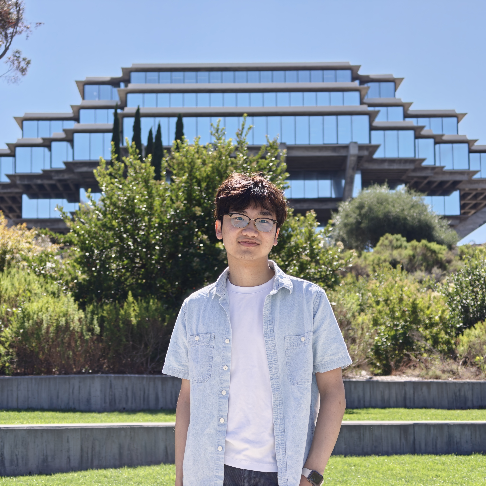

I am a Ph.D. student in Computer Science at New York University, advised by Prof. Erdem Varol. My research lies at the intersection of machine learning and neuroscience. I develop self-supervised and representation learning models for large scale neural recordings, both to build better tools for neuroscientists and to understand neural computation. I am especially interested in how population activity organizes into low-dimensional state spaces, and in decoding behavior and anatomical structure from neural activity.
Previously, I received my B.S. in Computer Science from Columbia University, where I worked with Prof. Liam Paninski. I am also a Guest Researcher at the Center for Computational Neuroscience at the Flatiron Institute, and collaborate with Prof. Alex Williams and Prof. György Buzsáki.
Family name:
Given name:
Quoted from a Chinese idiom 一馬平川, my full name means the flat ground that one can ride straight across and thus implies enjoying a smooth life.
眾峰來自天目山，勢若駿馬奔平川。
There are lots of mountains from Tianmu Mountain, which have the might of fine horses galloping across flat ground.